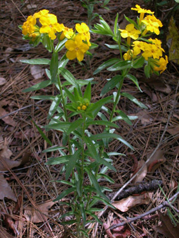

Previous || Next || Return to Mystery Plants || USC Herbarium
This Week's Mystery Plant | Dr. John B. Nelson Curator, USC Herbarium |
|
The forget-me-not family contains about 2,000 different species found nearly worldwide. In addition to "forget-me-not," many species are popular garden plants and herbs, such as Virginia bluebell, comfrey, and borage, and still others are best known as weeds, such as the brightly colored "Viper's bugloss," commonly seen in the Appalachians and farther north in New England. Forget-me-nots and their relatives have their flowers in somewhat specialized branches that tend to be coiled, at least when blooming first starts. Flower color in most of these species is white, blue, or pink. This week's Mystery Plant is a member of the forget-me-not family, but its flowers are brilliant yellow…a very warm, golden shade of yellow which is unmistakable. Because of this, the plants are quite conspicuous when in bloom. The plants are up to about 3 feet tall, and very deeply rooted. The tough, woody rootstocks tend to produce a purplish juice that will stain, and the plants have been used as a dye source. (The common name of this plant comes from an Indian word meaning "dye.") The stems are very coarsely hairy. Following blooming, the golden corollas fall away, and glistening, ivory-white nutlets remain, each containing a single seed. It is actually very widely distributed in North America, occurring from eastern Canada as far west as Montana, then south to the Gulf Coast. In South Carolina, it grows on deep, dry sands in the lower half of the state, sometimes seen along the roadside as brilliant golden flashes of color. This is another one of our natives that cannot be transplanted well at all, so you shouldn't try digging it up. |
 Photo by Linda Lee |